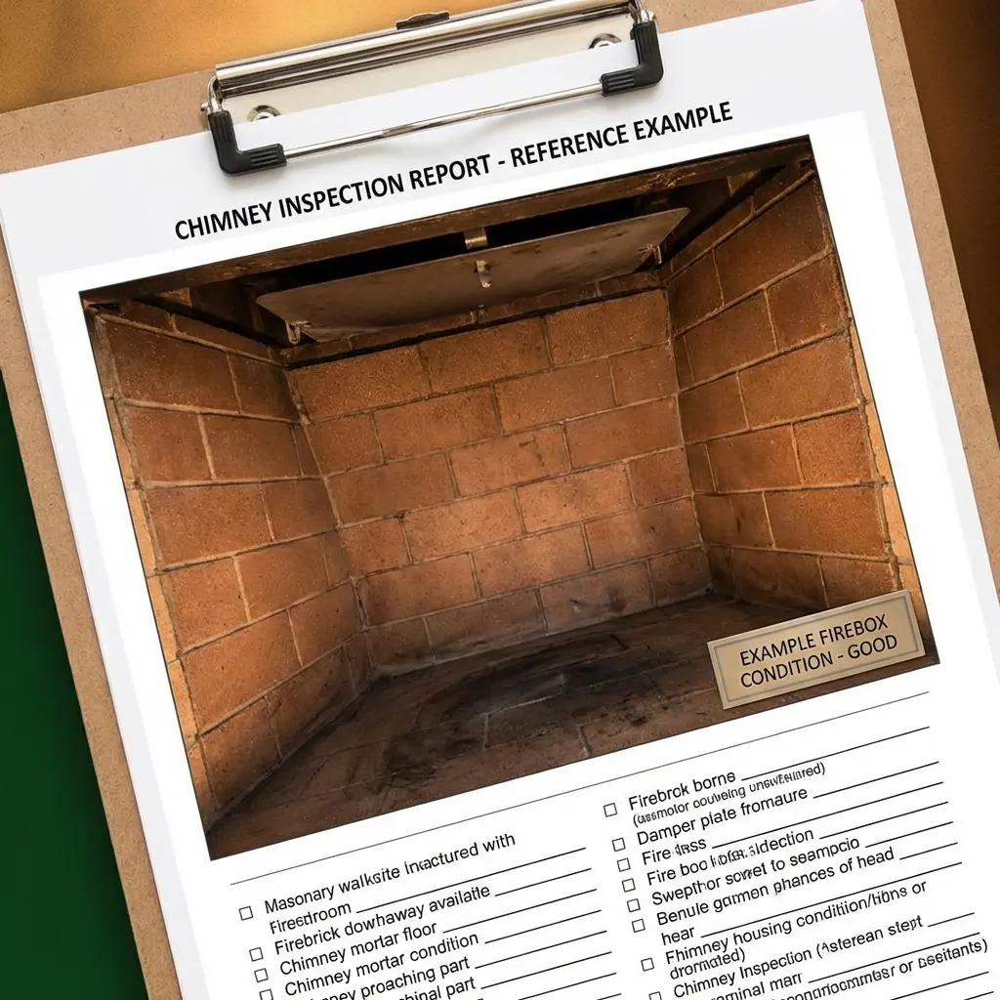
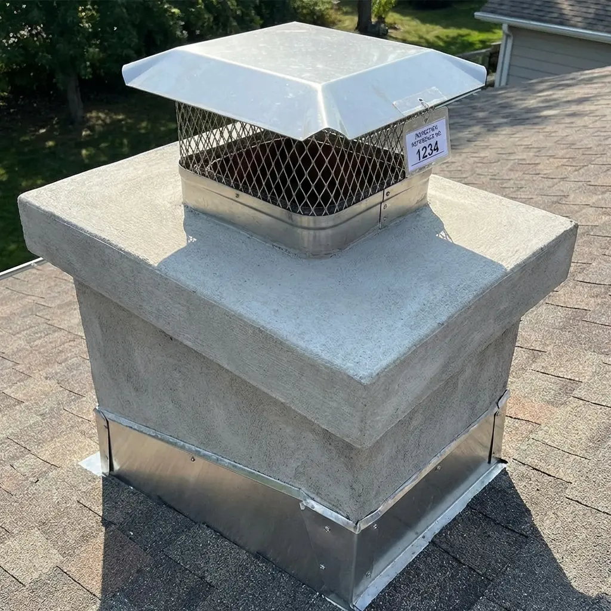
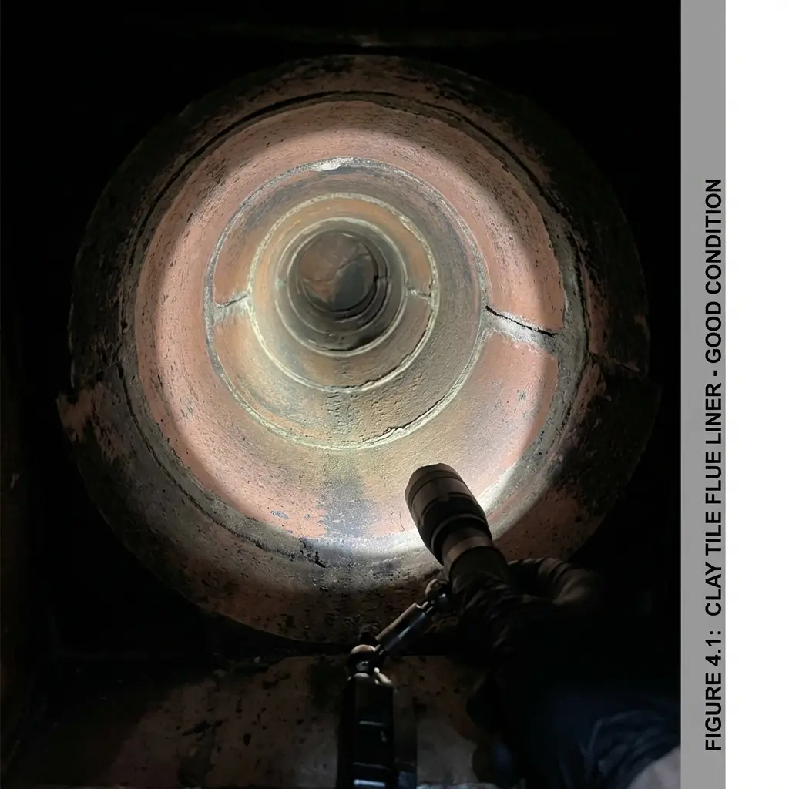

Chimney Inspection Report
NFPA 211 – Level 1 Visual Inspection
Inspector: John Doe
Credentials: CSIA Certified #0000
📋 Example Document Notice: This report is a fictional example provided for demonstration purposes only.
Property Information
Property Address:
123 Main Street
Columbus, OH 43215
Property Type: Single-Family Residence
Occupancy Status: Occupied
Inspection Scope
This inspection reflects a Level 1 visual inspection conducted in accordance with NFPA 211. The inspection was limited to readily accessible and visible areas of the chimney and venting system.
No concealed areas were accessed or dismantled. This inspection does not include internal video scanning, removal of components, or structural evaluation.
Conditions may change over time due to use, weather, or other factors. This report documents observed conditions at the time of inspection only.
Visual Inspection Checklist
The following items were evaluated visually where accessible at the time of inspection. This checklist does not imply inspection of concealed or inaccessible areas.
| Inspection Item | Status | Notes |
|---|---|---|
| Chimney Exterior (Visible) | ✓ OK | No visible damage observed |
| Chimney Crown | ✓ OK | No cracks or spalling visible |
| Chimney Cap / Termination | ✓ OK | Secure and properly positioned |
| Flashing (Visible) | ⚠ Concern | Minor wear observed at roofline |
| Firebox (Visible) | ✓ OK | No visible firebrick damage |
| Damper Operation | ✓ OK | Opens and closes freely |
| Smoke Chamber (Visible) | Not Observed | Area not accessible during Level 1 inspection |
| Flue Liner (Visible Portions) | ✓ OK | No defects observed from accessible view |
| Clearances (Visible) | ✓ OK | No clearance violations observed |
| Evidence of Creosote (Visual) | ✓ OK | No excessive accumulation visible |
Findings & Recommendations
Overall Inspection Status:
- Appears Serviceable
- Maintenance Recommended
- Further Evaluation Recommended
Observed Findings
Based on a Level 1 visual inspection of readily accessible areas, no immediately hazardous conditions were observed at the time of inspection. Visible portions of the chimney exterior, firebox, and termination appear intact. No excessive creosote accumulation was observed from visible areas.
Recommendations
While no urgent issues were identified, routine maintenance and periodic inspections are recommended to ensure continued safe operation. If changes in appliance use occur, or if concerns arise, further evaluation may be warranted.
Photo Documentation
Images shown below are illustrative examples included to demonstrate how visual documentation is typically presented in a professional chimney inspection report. These reference images do not represent an actual inspection.

This image is a visual reference demonstrating how firebox condition is typically documented in an inspection report.

This image shows how chimney crown, cap, and flashing documentation appears in a professional report.

This reference shows typical flue liner inspection photo documentation from inside the chimney.
In actual inspection reports, photo documentation typically includes the firebox interior, chimney exterior and masonry condition, crown and cap/termination, flashing at the roofline, and any visible areas of concern. Photos provide visual evidence supporting the checklist findings and recommendations.
Summary for Homeowner
At the time of this inspection, the visible portions of your chimney and fireplace system did not show signs of immediate safety concerns. Based on what could be visually observed, the system appears suitable for continued use under normal conditions.
This inspection was limited to visible and accessible areas only. Some parts of the chimney system are concealed and cannot be evaluated without more advanced inspection methods. Regular maintenance and follow-up inspections are recommended to maintain safe operation over time.
If you have questions about this report or would like clarification on any findings, contact your chimney professional before using the appliance.
Inspector Acknowledgment
This report reflects conditions observed at the time of inspection based on a Level 1 visual inspection as defined by NFPA 211.